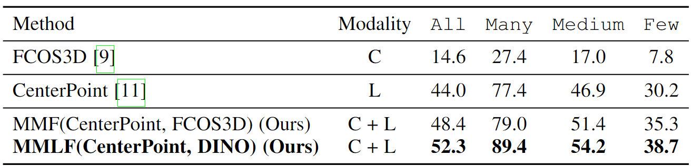
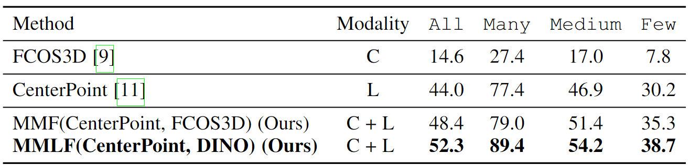

State-of-the-art comparison on nuScenes.
State-of-the-art comparison on Argoverse 2.0.
Contemporary autonomous vehicle (AV) benchmarks have advanced techniques for training 3D detectors, particularly on large-scale LiDAR data. Surprisingly, although semantic class labels naturally follow a long-tailed distribution, existing benchmarks focus on only a few common classes (e.g., pedestrian and car) and neglect many rare classes in-the-tail (e.g., debris and stroller). However, AVs must reliably detect both common and rare classes for safe operation in the open world. We address this challenge by formally studying the problem of Long-Tailed 3D Detection (LT3D), which evaluates all annotated classes, including those in-the-tail. We address LT3D with hierarchical losses that promote feature sharing across common-vs-rare classes, and introduce diagnostic metrics that award partial credit to "reasonable" mistakes respecting the hierarchy (e.g., mistaking a child for an adult). Further, we point out that fine-grained tail class accuracy is particularly improved via multimodal late fusion of independently trained uni-modal LiDAR and RGB detectors. Importantly, such a late-fusion framework allows us to leverage large-scale uni-modal datasets (with more examples for rare classes) to train better uni-modal RGB detectors, unlike prevailing multimodal detectors that require paired multi-modal training data. Finally, we examine three critical components of our simple late-fusion approach from first principles and investigate whether to train 2D or 3D RGB detectors, whether to match RGB and LiDAR detections in 3D or the projected 2D image plane for fusion, and how to fuse matched detections. Extensive experiments reveal that 2D RGB detectors achieve better recognition accuracy for rare classes than 3D RGB detectors and matching on the 2D image plane mitigates depth estimation errors. Our proposed late-fusion approach significantly improves LT3D performance over prior art, particularly improving mAP on rare classes from 12.8 to 20.0!
We report performance for three groups of classes based on their cardinality (split by dotted lines): Many, Medium, and Few.
The nuScenes defines a semantic hierarchy for all classes, grouping semantically similar classes under coarse-grained categories.
We treat each class as its own group to avoid hand-crafted grouping heuristics and design a group-free strategy, in which each class has only one linear layer as its detector and all classes share a signle detector head.
Multimodal filtering effectively removes false-positive LiDAR detections despite their high confidence scores.

We examine three key components in the late-fusion of uni-modal RGB and LiDAR detectors。
Our multi-modal late-fusion approach takes 3D LiDAR and 2D RGB detections as input, matches 2D RGB and (projected) 3D LiDAR detections on the image plane, and fuses matched predictions with score calibration and probabilistic ensembling to produce 3D detections.

Three examples demonstrate how our multi-modal late-fusion improves LT3D by ensembling 2D RGB detections (from DINO) and 3D LiDAR detections (from CenterPoint).
The video demo shows that our method is significantly better than CMT on dataset.
State-of-the-art comparison on nuScenes.
State-of-the-art comparison on Argoverse 2.0.
@article{yechi2024long-tailed,
title={Long-Tailed 3D Detection via Multi-Modal Late-Fusion},
author={Ma, Yechi and Peri, Neehar and Wei, Shuoquan and Dave, Achal and Hua, Wei and Li, Yanan and Ramanan, Deva and Kong, Shu},
journal={arXiv preprint arXiv:2401.12425},
year={2024}
}